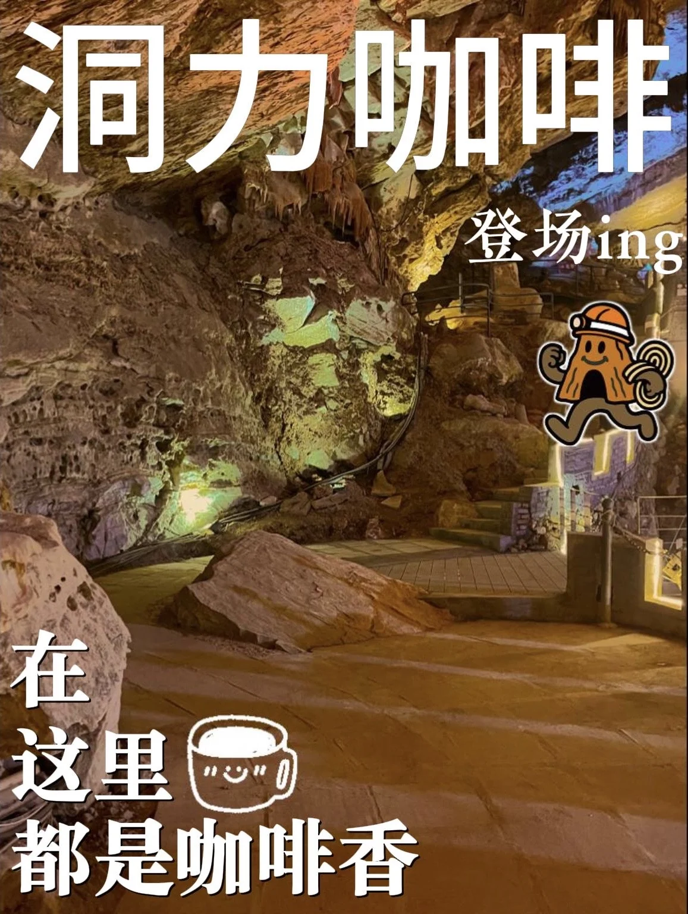
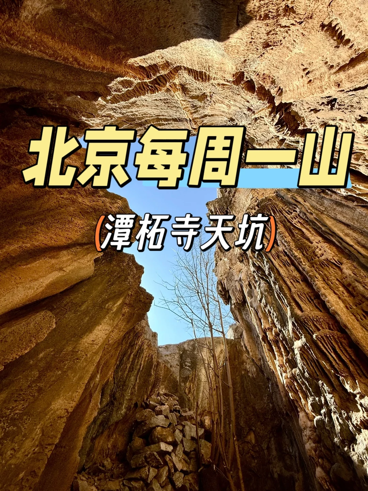

潭柘寺天坑小环线 + 洞力场 / 阳光房咖啡
春季周末 · 先认真爬一次，再精致休息的完整一日线


看图理解这条线



行程卡
| 字段 | 内容 |
|---|---|
| 区域 | 北京·门头沟 |
| 主题 | 洞穴咖啡收尾 |
| 总时长 | 8.0h |
| 预估自驾 | 37km |
| 徒步参数 | 11.4km / 688m / 5.2h |
| 强度 | 中等偏上 |
| 适合 | 想认真走山线 / 下山还想有仪式感收尾 |
| 一句话结论 | 强度最完整，也最适合做“认真运动 + 精致恢复”对照体验。 |
路线摘要
强度最完整，也最适合做“认真运动 + 精致恢复”对照体验。
🏞️ 目的地介绍
⛰️ 潭柘寺天坑这条线和前两条不是一个强度级别。六只脚轨迹页与info JSON都显示它大约 11.4km、累计爬升 688m，已经是需要认真走的正常山线，因此它必须是当天唯一的体力主线。好处是这条路线非常“像在真正出去玩”，不是散散步，而是有明确完成感。
✨ 活动介绍
🕳️ 下山后的亮点在潭柘寺片区的休闲内容很有反差感。小红书上关于洞力场洞穴咖啡、潭柘寺阳光房咖啡、甚至 gaga 的内容，基本都在讲“山线结束后的精致恢复”。不过从本轮可稳定抓到的点评结果看，真正信息完整、适合直接落地的餐饮锚点主要还是 gaga 和墨托咖啡这两家。
✨ 活动节奏
🕳️ 下山后的收尾是这条线的反差点：高强度山线结束后，直接进潭柘寺片区喝精致咖啡 / 吃山野西餐，让一天的记忆不止是"爬累了"。锚点建议：想有仪式感午餐选 gaga 紫旸山野店（山景餐厅、露台、门头沟西餐榜第 2）；想彻底慢下来选墨托咖啡（门头沟咖啡热门榜第 1，可带宠、有露台）。洞力场"洞穴咖啡"和阳光房在小红书上出片很密，但公开点评数据稳定度不如前两家，适合作为备选。
商户评分、招牌、营业时间、差评风险等详细信息统一放在页面最底部的「点评信息卡」里。
推荐行程安排
| 序号 | 活动 | 时长 | 备注 |
|---|---|---|---|
| 1 | 五道口出发，自驾去潭柘寺起点片区 🚗 | 1.2h | 建议尽量早出发，给山线留足时间 |
| 2 | 潭柘寺天坑小环线 11.4km / 688m ⛰️ | 5.2h | 当天唯一体力主线，不再叠任何第二条徒步 |
| 3 | 下山后休整 / 补水 | 0.3h | 先恢复，再进入休闲段 |
| 4 | 洞力场 / 阳光房咖啡 / gaga ☕ | 1.5h | 用精致休闲给整天收尾 |
| 5 | 返程机动 | 0.8h | 高强度日程建议预留缓冲 |
补证入口已直接放在对应介绍段落里：徒步看六只脚，内容氛围看小红书，临出发校验商家再看点评 / 携程 / Bing。
为什么这个方案值得保留
- 六只脚数据清楚，强度与另外两条明显区分开，适合做“更认真”的那个选项。
- 潭柘寺片区的内容平台叙事非常成熟：认真走山 + 精致喝咖啡，组合感强。
- 如果你希望周末既有运动完成感，又不想最后狼狈收尾，这条线最完整。
风险与临门一脚
- 天气、体能和下山后的排队情况，对整体体验影响更大。
- 若同行人不爱中强度徒步，这条路线会明显过量。
如果需要再做一轮公开存在性补证，可以直接看 携程搜索、Bing 备用搜索；若要确认餐饮/咖啡细节，再补开 点评搜索 即可。
🍽️ 点评信息卡（商户锚点）
从多源（点评搜索页 + 商户页 + 小红书）合并的锚点数据，临出发前复核营业状态和排队情况。
🍽️ 点评信息卡
gaga(北京紫旸山野店)
- 招牌菜
- 芥末蜂蜜薯条、gaga 鲜果茶、松露野菌奶油手工意面、M3 牛胸披萨、香辣鸡翅、西班牙香肠芝士披萨、椰子油全麦巧克力蛋糕。
- 团购 / 套餐
- 点评页直接可见两档套餐：258 元 All Day Chill 双人餐、488 元欢聚山野 3-4 人餐；均支持随时退、过期自动退。
- 菜单结构
- 页面显示“菜单(1)”入口，结合推荐菜与团购内容，可判断为西餐 / 披萨 / 意面 / 甜点 / 茶饮结构。
- 好评关键词
- 山里独特环境、适合拍照打卡、有露台、路边免费停车、错峰时可以坐很久。
- 差评 / 风险
- 周末中午可能排队；有用户提到山里店的品类比城里门店少，部分时段只有单点没有活动。
墨托咖啡&柴窑披萨(潭柘寺店)
- 招牌菜
- 黑松露披萨、拿铁、墨托秘制烤鸡翅、moto 咖啡、玛格丽特披萨、鲜虾果蔬沙拉、围炉煮茶、提拉米苏。
- 团购 / 套餐
- 当前可见 22 元奶油南瓜汤，以及 299 元“工作日黑松露披萨双人餐”；页面明确支持随时退、过期自动退。
- 菜单结构
- 页面显示“菜单(3)”入口，说明实际供给比推荐菜列表更完整；从评论能稳定判断披萨、意面、鸡翅、咖啡是核心品类。
- 好评关键词
- 环境很出片、室内氛围感强、位置绝佳可远望青山、适合开车前往。
- 差评 / 风险
- 有人明确吐槽价格偏高、高峰排队、部分桌位夏天偏晒；个别评价还提到停车和吸烟体验不稳。
如果更看重景观和空间感可以选墨托；如果更想把收尾做得更像“山野版西餐 brunch”，则更偏向 gaga。